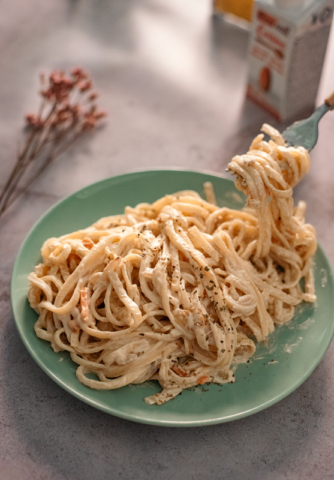
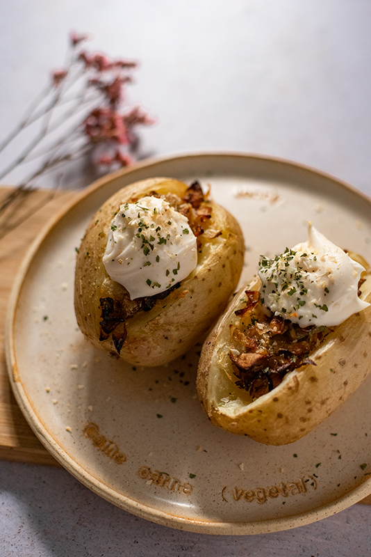

¡Buenas!
¿Quieres aprender a preparar unas buenísimas tortitas de
crema de queso vegano? Pues entonces sigue leyendo.
Recetas veganas
Recetas veganas, muy fáciles de hacer
Tortitas veganas de crema de queso
INGREDIENTES
- 1 taza de harina de trigo.
- Opcional: 1/3 de taza de alternativa al huevo veggs.
- 2 cditas de levadura en polvo.
- 1 taza y media de leche de avena (si no usas veggs, usa algo menos de leche vegetal).
- 2 cdas soperas de sirope (+ extra).
- 2 cdas soperas de vainilla líquida.
- Aceite de oliva.
- Queso en crema vegano.
- Opcional: margarina vegetal para decorar.
PREPARACIÓN
- Mezcla todos los ingredientes para la masa y mezclamos a mano con unas varillas, hasta que no queden grumos.
- Ponemos 2 cdas soperas sobre una sartén antiadherente, ligeramente engrasada con aceite de oliva (solo mancha la base con un papel manchado en aceite).
- Mantén a fuego bajito, y esperamos a que la masa seque y haga "burbujitas".
- Damos la vuelta con una palita de madera para dorar el otro costado.
- Espera a que se dore y reservamos en un plato.
- Repetimos hasta terminar con toda la masa.
- Las colocamos en forma de montaña, y rellenamos con queso crema vegana entre las tortitas. Cubrimos con sirope y decoramos con un cubito de margarina vegetal ¡A disfrutar!
Pasta con "bacon" de boniato

¡Hola!
Hoy vamos a preparar unos riquísimos tallarines con
bacon vegano. Aquí te dejo la receta.
INGREDIENTES
- Tallarines.
- 1/2 boniato.
- 600ml de Nata vegetal (yo usé la Almond nature de Ecomil)
- Setas variadas (shiitake y champiñones).
- 1 Cebolla.
- Aceite de oliva.
- Sazonador sabor “bacon”.
- Ajo en polvo.
- Pimienta.
- Perejil.
- Sal.
PREPARACIÓN
- Empezaremos laminando muy fino el boniato pelado. Yo hice uso de una mandolina con cuchilla para hacerlo más rápido y preciso. Después, con un cuchillo lo corté en pequeños rectángulos.
- Seguidamente, en una sartén lo salteamos durante un par de minutos con aceite de oliva.
- Añadimos entre 1 y 2 cucharadas soperas del sazonador de Bacon. Y más si quieres.
- Removemos y añadimos la cebolla y las setas picadas.
- Salteamos hasta dorar y añadimos los 600 ml de nata vegetal, removemos y añadimos un toque de pimienta, un toque de perejil, ajo en polvo y sal al gusto.
- Removemos y dejamos a fuego medio, hasta reducir ligeramente.
- Para terminar, mezclamos con los tallarines ya cocidos y servimos caliente ¡A disfrutar!
Patatas asadas en la freidora de aire

¡Hola!
¿Te atreves a preparar estas patatas asadas rellenas? ¡Hoy lo hacemos!
INGREDIENTES
- 3 patatas
- Aceite de oliva
- 3 champiñones
- 1/2 cebolla
- Mayonesa vegana
- Sal
- Cebolla en polvo
- Ajo en polvo
- Perejil
PREPARACIÓN
- Comenzaremos lavando y cortando una abertura en la parte superior de la patata, en forma de V. Apoyate en el vídeo de arriba si necesitas saber cómo hacerlo.
- Ahora, en una olla grande, cocemos las patatas hasta que sean fácilmente atravesables con un tenedor - unos 15 minutos, aunque depende del tamaño de la patata-.
- Por otro lado, picamos finamente la cebolla y las setas. La salteamos en una sartén con aceite de oliva. El salteado será ligero, cuando empiecen a dorar lo apagamos: se terminarán de hacer en la freidora de aire.
- Rellenamos las patatas con el salteado, pintamos la patata con un poquito de aceite de oliva y la introducimos en la freidora de aire a 130º durante unos 10 minutos o hasta dorar. El tiempo puede variar dependiendo del tamaño de la patata y la freidora de aire.
- Retiramos la patata y ahora, añadimos por encima una generosa capa de mayonesa vegana, ajo en polvo, cebolla en polvo, sal y perejil.
- ¡Y lista para comer! Recuerda servirla caliente y con la mayonesa vegana fría.
¿Quieres suscribirte a mi newsletter?